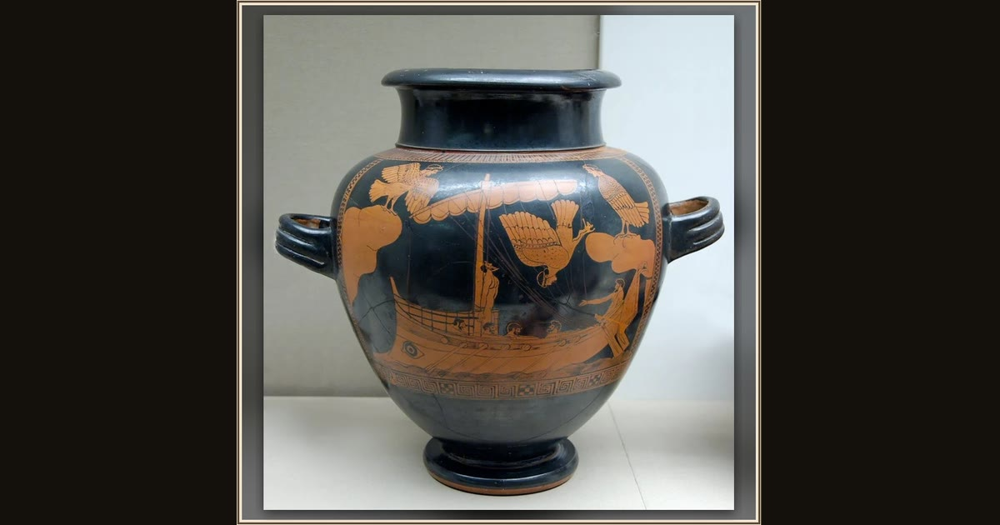

The Siren Vase (Odysseus and the Sirens)
Attributed to the Siren Painter, Attic Greek · c. 480–470 BC · British Museum · London, England
Clever Odysseus had his crew tie him to the mast so he could safely hear the bird-women Sirens sing their dangerous, beautiful song. Explore its place in Book XII of the Odyssey.